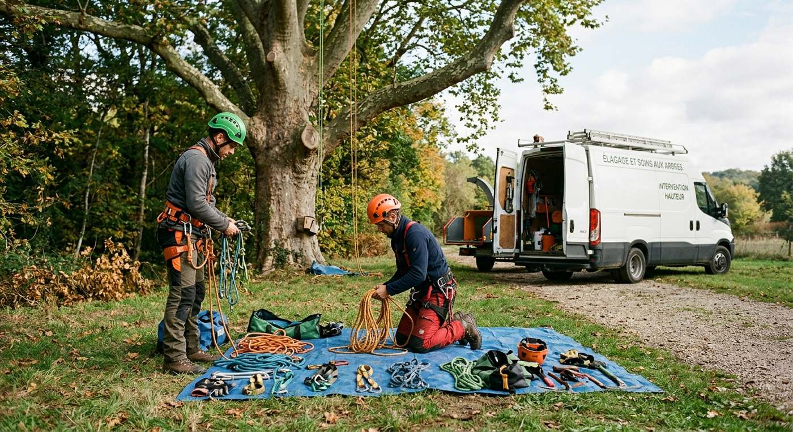
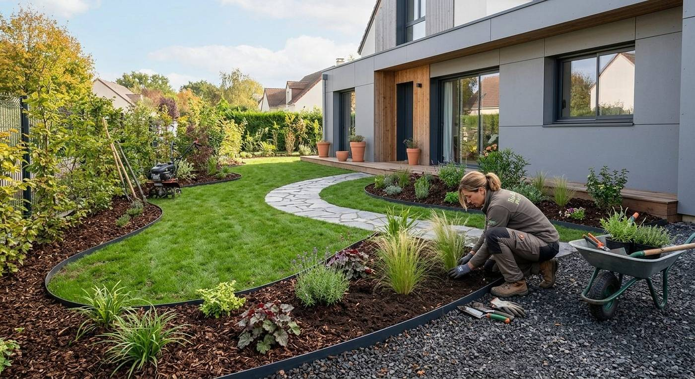

L’entreprise
Un paysagiste de proximité à Rosay.
Authier Parcs et Jardins accompagne particuliers et propriétaires dans la création et l’entretien de leurs espaces verts, dans les Yvelines.

Qui sommes-nous
Julien Authier, à votre écoute.
L’entreprise est dirigée par Julien Authier. Vous avez un interlocuteur unique : celui qui vient voir votre terrain est celui qui vous répond au téléphone.
- Dirigeant : Julien Authier
- Activité : aménagement paysager
- Commune : Rosay (78)
- SIREN : 801 930 843

Notre façon de travailler
Trois engagements simples.
Écoute
Chaque jardin est différent : nous partons de votre terrain et de vos usages.
Soin
Un chantier propre, des finitions travaillées, des matériaux choisis avec vous.
Proximité
Une entreprise locale, joignable directement par téléphone.
Contact
Faisons connaissance autour de votre jardin.
Un appel suffit pour parler de votre projet à Rosay ou aux alentours.